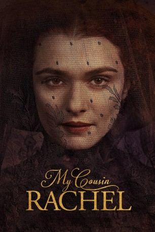

#6952 Meine Cousine Rachel
Alternativ: My Cousin Rachel
 
 IMDB-Wertung: 6.0 / 10
IMDB-Wertung: 6.0 / 10  Metascore: 63
Metascore: 63 
Philip Ashley (Sam Claflin) ist am Boden zerstört, als er erfährt, dass sein Cousin und Vormund Ambrose Ashley in Italien ums Leben gekommen ist. Der Mann, der stets eine Vaterfigur für ihn war, hatte seiner Gesundheit wegen die Reise in das wärmere Land auf sich genommen und Philip kurz darauf über seine Hochzeit mit einer gewissen Rachel (Rachel Weisz) informiert. Einige Zeilen in Ambroses Briefen lassen Philip nun nachträglich vermuten, dass seine angeheiratete Cousine, von der er bisher nur schriftlich gehört hat, etwas mit dem Tod seines Vormundes zu tun hatte. Doch dann taucht Rachel eines Tages in England auf und Philip kann die Frau nicht abweisen - vor allem deshalb nicht, weil die verarmte Witwe nichts von ihrem verstorbenen Ehemann geerbt hat, sondern dieser in seinem Testament alles Philip vermacht hat.
Jahr: 2017
Dauer: 106 Minuten
FSK:
Land: England Studio: 20th Century FoxTonspuren:
Untertitel:
Auflösung: 1080p (1920x808) Größe: 6983 MB
Genre: Drama, Liebe, Mystery
Regisseur: Roger Michell
Drehbuch: Daphne Du Maurier
Soundtrack:
Darsteller:
 Rachel Weisz als Rachel Ashley
Rachel Weisz als Rachel Ashley Sam Claflin als Philip
Sam Claflin als Philip Holliday Grainger als Louise
Holliday Grainger als Louise Iain Glen als Kendall
Iain Glen als Kendall Simon Russell Beale als Couch
Simon Russell Beale als Couch- Bobby Scott Freeman als John
 Andrew Havill als Parson Pascoe
Andrew Havill als Parson Pascoe- Poppy Lee Friar als Mary Pascoe
- Katherine Pearce als Belinda Pascoe
- Adam Loxley als Adam
 Andrew Knott als Joshua
Andrew Knott als Joshua Alexander Arnold als Young Lad
Alexander Arnold als Young Lad- Harrie Hayes als Tess
- Austin Taylor als Philip, 6 yrs
- Louis Suc als Philip, 10yrs
 Pierfrancesco Favino als Enrico Rainaldi
Pierfrancesco Favino als Enrico Rainaldi- Deano Bugatti als Ambrose , uncredited
- Tim Barlow als Seecombe
- Tristram Davies als Wellington
- Vicki Pepperdine als Mrs. Pascoe
- Ray Sampson als Doctor
- Cal McCrystal als Geoffrey
- Dorian Lough als Gabriel
- Tobias Beer als William
- Chris Gallarus als Timothy
- Neil MacColl als Singer
- Wilf Walters als Pig Farmer
- Margaret Michell als Market Girl
- Corin Chatwin als Philip, 2 yrs
- Sparrow Michell als Philip, 4 yrs
- Stuart Davidson als Farmer , uncredited
- Attila G. Kerekes als Villager , uncredited
- Holly Sohail als Woman , uncredited
Datei: X:\2017(G-M)\Meine Cousine Rachel (2017, FSK, 1920x808).mkv seit 12.09.2017
Festplatte: HD 2017(A-Z)-2018(A-F)
 Es gibt insgesamt 148 Filme in der Gruppe '2017(G-M)'
Es gibt insgesamt 148 Filme in der Gruppe '2017(G-M)'